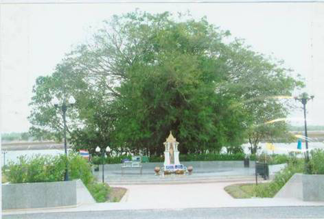

เมนู |
ศาล หลวงต้นไทร เป็นศาลหลวงที่ทรง สร้างโดยพระราชดำริของพระบาทสมเด็จพระเจ้าอยู่หัว จัดตั้งเมื่อวันศุกร์ที่ 29 ตุลาคม 2547 และประกอบพิธีบวงสรวงอัญเชิญเทพารักษ์ ขึ้นประดิษฐ์ฐาน ณ ศาลต้นไทร หมู่ที่ 11 ตำบลการะเกด อำเภอเชียรใหญ่ จังหวัดนครศรีธรรมราช โดย ดร.สุเมธ ตันติเวชกุล กรรมการและเลขานุการมูลนิธิชัยพัฒนา เป็นประธานในพิธีฯ ศาลต้นไทรสร้างด้วยไม้สักทั้งหลัง บริเวณโดยรอบปูด้วยหินอ่อนและมีการจัดสภาพภูมิทัศที่สวยงาม รวมทั้งมีต้นไทรจำนวนมากขึ้นอยู่ด้านหลังและตั้งอยู่ริมแม่น้ำชะอวดแพรก เมือง ซึ่งมีทัศนียภาพที่สวยงามมาก ในเทศกาลต่าง ๆ จะมีนักท่องเที่ยวทั้งในและต่างประเทศมาเยี่ยมชม และนมัสการจำนวนมากเพราะเชื่อว่ามีความศักดิ์สิทธิ์ คุ้มครองให้ปลอดภัยจากภัยร้ายต่าง ๆ รวมทั้งโรคภัยไข้เจ็บและให้โชคลาภ 
|
| หน้าแรก | |
| วัดพระมหาธาตุ วรมหาวิหาร | |
| วัดเขาขุนพนมและศูนย์วิทยาศาสตร์เพื่อ การศึกษาเขาขุนพนม | |
| ศูนย์ศิลปาชีพบ้านเนินธัมมัง | |
| ศาล หลวงต้นไทร | |
| สวนสมเด็จพระศรีนครินทร์ 84 (ทุ่งท่าลาด) | |
| แหลมตะลุมพุก | |
| วัดแม่เจ้าอยู่หัว (พระนางเลือดขาว) | |
| เขื่อนบ้านพ่อ ปากพนัง | |
| น้ำตกกรุงชิง | |
| ล่องแก่งคลองกลาย | |
| อ่างเก็บน้ำจุฬาภรณ์ | |
| วัดอาตาปีคีรีเขต (วัดถํ้าเพด้าน) | |